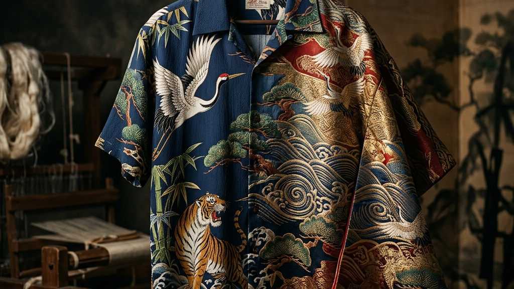
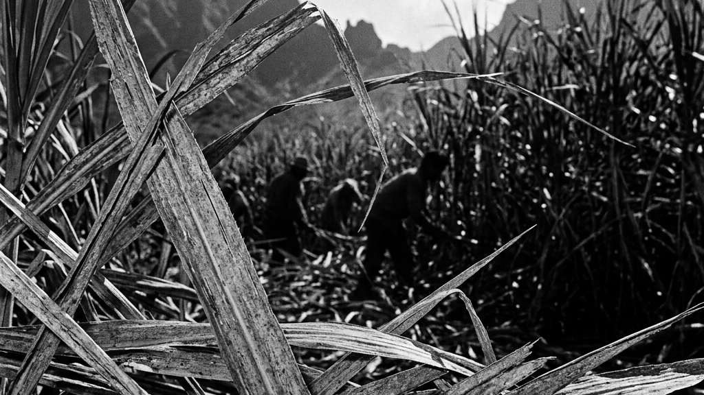
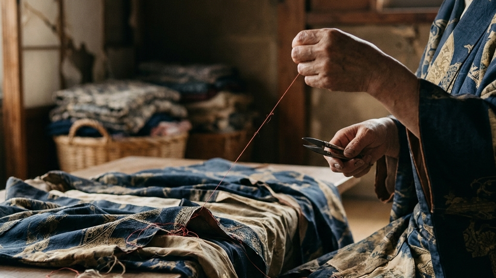
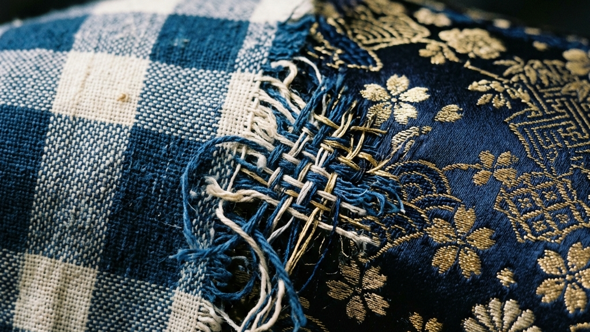
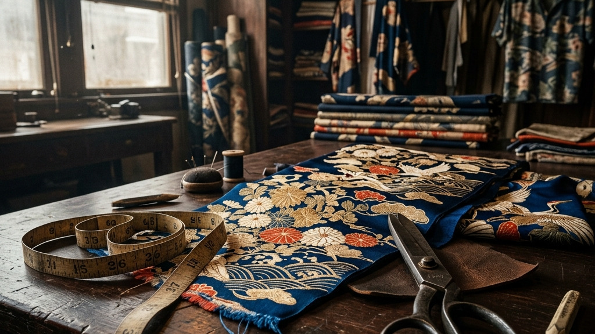
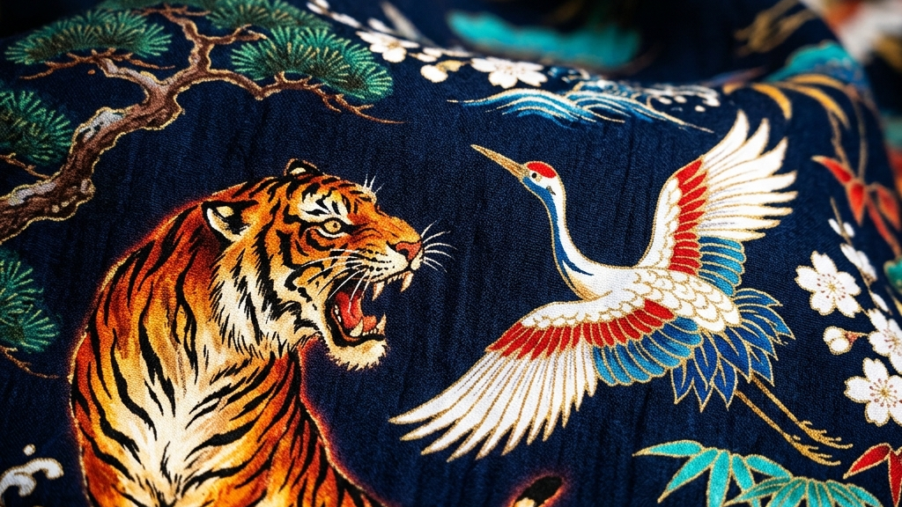
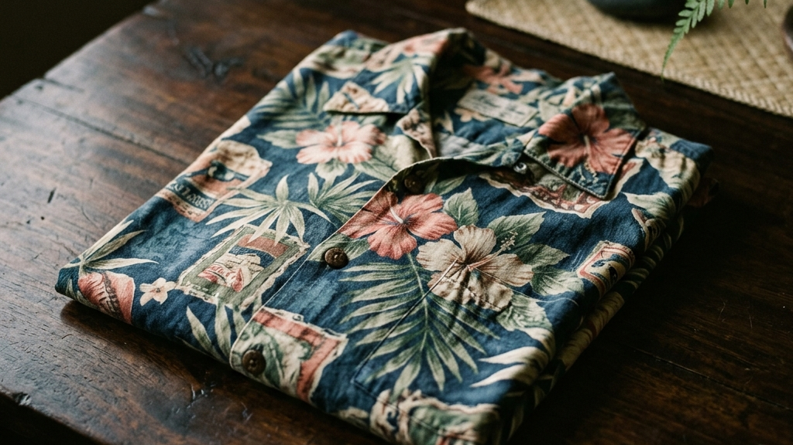
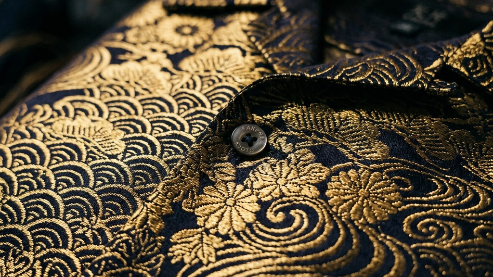

太平洋の波に抱かれた美しい島々、ハワイ。常夏の楽園として世界中の人々を魅了し続けるこの地は、かつて多くの日本人にとって、希望と絶望が入り混じる過酷な新天地であった。「アロハシャツ」という色鮮やかで快活な意匠の背後には、故郷を離れ苛烈な運命に翻弄されながらもたくましく生きた日本人移民たちの、血と汗に塗れたディアスポラ（離散）の歴史が深く織り込まれている。一枚のシャツが生み出された背景には、アイデンティティの喪失と再構築、そして異文化との衝突の只中で結晶化した「文化混淆（ハイブリディティ）」の真実が存在する。
【本稿で紐解く3つの核心】
ラグジュアリーブランド「Kakera」が西陣織という日本の最高峰の工芸技術をアロハシャツというキャンバスに再構築し、1000年残る世界資産としての衣服を提示するその土台には、日系移民が実践した「解体と再構築」という根源的な哲学が深く共鳴している。和柄アロハシャツの深層：エキゾチシズムではない「精神の防波堤」としての図像学と血肉の連鎖が示すように、意匠の背後にあるのは単なる南国の情緒ではなく、生き抜くための切実な祈りである。本稿では、アロハシャツのルーツに秘められた歴史の実態と、絶望を美しさへと転換させた力強い精神性を、静謐な視座とともに紐解いていく。

アロハシャツの起源を知るためには、19世紀末のハワイにおいて日本人労働者たちが置かれていた極限の現実を直視しなければならない。色鮮やかなリゾートウェアの源流は、観光や余暇とは対極にある泥臭い労働の歴史から産声を上げたのである。
1868年（明治元年）、「元年者」と呼ばれる初期の渡航者たちがハワイの土を踏んだことに始まり、1885年に明治政府とハワイ王国との間で結ばれた条約に基づく「官約移民」によって、日本からハワイへの本格的な移民の歴史が幕を開けた。貧困から脱却し「錦を飾る」という切実な夢を抱いて太平洋を渡った日本人の数は、後の時代も含め約20万人に及ぶ。当時のハワイは急激な経済発展の只中にあり、広大なプランテーション農場を支えるための安価な労働力を世界中から求めていた。日本からの移民たちは、新しい時代への希望を胸に船に乗り込んだが、彼らが足を踏み入れた新天地は労働者を搾取する苛酷なプランテーションシステムであった。
彼らの日常は、熱帯の焼け付くような日差しのもとで早朝から夕暮れまで続くサトウキビ農園での重労働である。馬に乗ったルナ（Luna＝現場監督）が鞭を持ちながら厳しく監視する下で、赤土の埃を吸い込みながらの過酷な作業が果てしなく続いた。少しでも手を休めれば容赦ない叱責と体罰が飛び交い、給与は生活を維持するのさえ困難なほど低く抑えられていた。現代における華やかなハワイのイメージからは想像もつかないほど、当時のプランテーションは文字通り血と汗が染み込んだ生存競争の最前線であった。異なる言語、文化、そして理不尽な暴力が交錯する農園という閉鎖空間において、彼らは自らのルーツにすがりながらも、目の前の過酷な現実に順応していくほかなかったのである。
「ハワイハワイと来てみりゃ地獄 ボーシが閻魔でルナは鬼」
— 日系移民の労働歌「ホレホレ節」より
この極限状態の中で、移民たちは自らの苦しみや望郷の念を歌に託した。「ホレホレ節（Holehole Bushi）」である。「ホレホレ」とはハワイ語でサトウキビの枯れ葉を剥ぎ落とす作業を指す。鋭いサトウキビの葉で手足を切り裂かれながら、彼らは涙とともにこの歌を口ずさんだ。この生々しい叫びは、故郷から切り離された人々が異国の地で抱えたトラウマの証明であり、同時に、絶望の中で連帯を保つための精神的な命綱であった。この泥臭く、不器用で、痛みを伴う歴史的な摩擦の中で、日本人が本来持っていた衣服（着物）は、その機能不全を露呈し、物理的な解体を余儀なくされていくのである。

プランテーションという過酷な生存環境において、移民たちが直面した最初の物理的障壁は、皮肉にも彼らが故郷から持ち込んだ「着物」そのものであった。この衣服の機能不全は、彼らに精神的な切断と変容を迫る契機となる。
移民たちが日本から大切に持参したのは、木綿の単衣（ひとえ）、絣（かすり）、浴衣、あるいは長半纏（ながばんてん）などの伝統的な和装であった。これらは日本の温暖湿潤な気候や、国内での農作業には適した完成された衣服である。しかし、ハワイのサトウキビ畑という特殊な環境下においては、その構造が致命的な弱点となった。風通しの悪い和装は熱帯の過酷な発汗を処理しきれず、長く垂れ下がる着物の袂（たもと）や裾は、作業の邪魔になるだけでなく、鋭利で刃物のようなサトウキビの葉に引っかかり、重大な怪我の原因となったのである。西陣織 1200年の歴史と極限の分業制が織りなす最高峰の絹織物に見られるような、日本人が古来より培ってきた衣服への美意識と機能性は、赤道に近い異国の農園において完全にリセットを強いられた。日々の労働効率を高め、何よりも自身の命と体を守るため、彼らは衣服のスタイルを根本的に見直す必要に迫られたのである。
生存と順応のため、日系移民の女性たちは極めて重い決断を下す。それは故郷との長きにわたる精神的な繋がりを物理的に切断し、着物という形態そのものを完全に「解体」するという不可逆な儀式であった。夜の闇の中、疲れ果てた身体に鞭を打ちながら、彼女たちは日本から持ち込んだ着物の糸を一本ずつ丁寧に解きほぐしていった。それは単なる裁縫作業ではなく、先祖から受け継いできた日本の美意識や、家族への望郷の念が染み込んだ「文化的皮膚」を自らの手で剥ぎ取る痛みを伴う作業であった。異国の地で生き抜くために、彼女たちは過去の自分たちの姿を文字通り切り刻んだのである。
Core Principles
しかし、この解体作業の根底には、絶望ではなく、あらゆる困難をしなやかに受け入れる日本人に固有の「逆転の哲学」が存在した。古い形に執着することをやめ、与えられた環境へ徹底的に順応するために自己を一度破壊する覚悟である。着物は失われたわけではない。糸を解かれた布地は、南国の気候に適応し、より強靭な生命力を持つ衣服へと昇華するための準備期間に入ったのだ。この「一度解体し、新たなコンテキストで再構築する」というプロセスこそが、のちに世界を席巻するアロハシャツを生み出す最も重要な精神的土壌となったのである。

着物を解体した女性たちが、その布地を再び衣服として縫製し直す際、構造の新たな「お手本」として目を向けたのが、ハワイのプランテーションですでに広く普及していた「パラカ（Palaka）」と呼ばれる作業着であった。このパラカとの運命的な出会いが、アロハシャツ誕生への決定的な歴史的接点となる。
パラカとは、もともとヨーロッパの船員たちや木こりが着用し、後にハワイのカウボーイ（パニオロ）たちが好んで着るようになった、青と白の格子柄のシャツである。極めて厚手で堅牢な綿織物（ツイル地）で作られたこのワークシャツは、鋭いサトウキビの葉から肌を守りつつ、熱帯の気候下における通気性も確保できるという、ハワイの過酷な労働環境における「完全な最適解」であった。移民たちは、自らの身体を守るために、この西洋由来の強靭な衣服のシルエットを模倣することを決意したのである。
着物（木綿の単衣）が採用していた「平織り」は、経糸（たていと）と緯糸（よこいと）が交互に交差するため、通気性に優れる反面、摩擦に弱く引き裂けやすいという弱点があった。一方、パラカシャツに用いられていた「ツイル（綾織り）」は、糸の交差点を斜めにずらして織り上げる構造を持つ。この織り方により、生地の表面が滑らかになり、サトウキビの鋭利な葉や硬い茎と接触した際の「摩擦係数」を物理的に大幅に低下させることができたのである。さらに、ツイル構造は生地の密度を高めるため、泥や埃の侵入を防ぎつつ、汗を素早く吸収・発散する機能を備えていた。過酷な生存競争の中で着物を捨てた移民たちがパラカを選んだのは、単なる手軽さからではなく、この「ツイル構造」がもたらす圧倒的な防御力というファクトに基づく、極めて合理的な選択であった。
興味深いことに、日系移民たちはこの西洋由来の格子柄に対して、不思議な親近感と郷愁を抱いた。均等に交差する紺と白の直線的な柄が、日本の農村部で日常的に着用されていた「絣（かすり）」の着物の風合いに酷似していたからである。異国のワークウェアの無骨なパターンの中に故郷の面影を見た移民たちは、パラカシャツを瞬く間に作業着の主流として受け入れていった。西陣織と引箔 千年の歴史を織り込む静謐なる美学と至高の職人技が示すように、日本の美意識は異素材や異なる技術を静かに取り込み、独自の文脈で昇華させる力を持っている。パラカとの出会いは、単なる実用性の追求を超え、視覚的な郷愁を通じた「異文化の受容」という極めて高度な心理的プロセスであった。
1920年代に入ると、パラカのシャツのパターン（型・立体裁断）に、解体して保管してあった着物や浴衣の生地を直接適用するという歴史的な試みが始まる。子供が成長して着られなくなった和服や、ハレの日のために大切にしまわれていた美しい反物が、西洋由来の開襟シャツのシルエットを持つ「和柄の衣服」へと再縫製されたのである。東洋の静謐で洗練された平面的な「和柄（松竹梅、鯉の滝登り、虎など）」が、西洋の開放的な立体シルエットと物理的に融合したこの瞬間。それは日本人としての絶対的な帰属意識が変容し、ハワイの地で根を下ろして生きる日系人（Japanese-American）としてのトランスナショナルなアイデンティティが、衣服という形で産声を上げた歴史的奇跡であった。

和柄の開襟シャツが単なる「移民の余所行き」や「農園の作業着の派生」という枠を超え、「高級なファッションアイテム」へと昇華していく歴史の背後には、ハワイに渡った日本の仕立て屋（テーラー）たちが持つ、並外れたカッティング技術の介入があった。
その発展の中心に存在したのが、日系人テーラー「ムサシヤ・ショーテン（武蔵屋商店）」である。東京出身の熟練した仕立て職人であった宮本長太郎が1904年にホノルルで創業し、のちに長男の宮本孝一郎が引き継ぎ「Musa-shiya the Shirtmaker」と改名したこの洋品店は、美しい日本の反物と西洋シャツの完全な融合を実現した。彼らは、日本の着物が持つ「直線裁ちの平面構造」を解体し、西洋の身体に合わせた「立体裁断」のパターンへと再構築するという、極めて高度なテーラリング技術を有していたのである。
宮本長太郎により設立。仕立て職人としての高い技術力をホノルルで開花させる。
長男・孝一郎が日本の絹や縮緬を輸入し、西洋の立体カッティングによる高級オーダーシャツの製作を開始。
ホノルル・アドバタイザー紙における同店の広告に、歴史上初めてその名称が掲載される。
彼らの卓越した職人技により、日本のシルクや縮緬（ちりめん）といったデリケートな高級素材が、南国の気候に適したリラックスした衣服へと形を変えた。本金糸と千年の構造証明─西陣織を支える漆と和紙の定着技術において示されるように、日本の工芸は異なる素材の特性を極限まで引き出し、強固な構造へと定着させる技術の歴史である。ムサシヤの職人たちもまた、湿気や強い日差しというハワイの気候的制約の中で、日本の絹織物が持つ光沢と強度を最大限に活かす縫製技術を確立した。この和洋の融合美は、現地駐留の米軍将兵や富裕層の観光客の目を瞬く間に捉え、エキゾチックなリゾートウェアとして爆発的な熱狂を生み出していくことになる。
ムサシヤの技術による和柄シャツが流行の確かな兆しを見せる中、歴史的な証明が活字として残されることとなる。1935年6月28日に地元紙「ホノルル・アドバタイザー」に掲載されたムサシヤの広告の中において、歴史上初めて「アロハシャツ（Aloha shirt）」という言葉が使用されたのである。名もなき移民たちがサトウキビ農園で血を流しながら生み出した作業着が、ハワイという土地の精神を宿した独立した衣服のジャンルとして、公式に歴史の表舞台へと姿を現した瞬間であった。続いて1936年には、中国系移民の商人エラリー・チャンが「アロハ スポーツウェア（Aloha Sportswear）」の商標登録を行い、個人経営の仕立て屋から既製服の大量生産とグローバルな商業化へと時代は一気に加速していく。

アロハシャツの商業化の流れは、ハワイ国内の仕立て屋の枠組みを越え、本格的な量産体制と海を越えたグローバルな生地貿易の確立へと移行していく。その過程で、日本の伝統的な染織技術がアロハシャツの歴史に決定的な黄金期をもたらすこととなる。
現代において「アロハシャツ」と言えば、パイナップルやヤシの木、フラダンサーといったトロピカルなハワイアン柄を想像する人が大半であろう。しかし、歴史的な事実として、初期のアロハシャツ市場を席巻し、現在でもヴィンテージ市場において最高級の評価を受けるのは、間違いなく日本の伝統的なモチーフを用いた「和柄（オリエンタル柄）」のシャツである。需要の爆発的な増加に伴い、ハワイ現地での着物の解体生地（中古の再利用）だけでは生産が全く追いつかなくなった。そこで、日本の織物産業の拠点であった京都や横浜から、ハワイのテーラーやアパレルメーカー向けに、アロハシャツ専用の反物（布地）が直接輸出されるという大規模な貿易の流れが構築されたのである。
| 素材名称 | 物理的性質 | アロハシャツへの影響 |
|---|---|---|
| 富士絹（ふじぎぬ） | 滑らかな光沢と軽さを持つ平織りの絹 | 風を孕むような極上のドレープ感を実現 |
| 壁縮緬（かべちりめん） | 表面に細かなシボ（凹凸）を持つ強撚糸織物 | 肌との接地面を減らし、熱帯での清涼感を提供 |
| レーヨン（人絹） | シルクを模した化学繊維。発色が極めて鮮やか | 抜染プリントによる多色刷りの黄金期を形成 |
京都の職人が染め上げた「富士絹」や「壁縮緬」が太平洋を越え、ハワイの風と光を纏う開襟シルエットへと仕立て直された。これらのキャンバスには、鶴や富士山、兜、虎といった精緻な日本の図像が多色刷り（オーバープリントや抜染）で鮮やかにプリントされた。プラチナ糸と西陣織｜不変と究極へ渇望する千年の金属箔定着技術に見られるような、日本人が古来より追求してきた「美しさへの偏執的な渇望と技術の定着」が、アロハシャツという異国の地で咲き誇ったのである。異文化の地で躊躇なく自らの文化を切り刻む移民の逆転の精神と、日本の職人たちによる究極の手工業技術がハワイで結実し、衣服という枠を超えた圧倒的な「工芸品市場」を構築した。
この黄金期を技術的な側面から決定づけたのが、日本の染工場が誇る「抜染（Discharge printing）」という特殊な化学的アプローチである。抜染とは、一度生地全体を地色（例えば深い紺や赤）で無地染めした後、特殊な還元剤や酸化剤を含んだ糊（抜染糊）を用いて、特定の柄の部分だけを化学反応によって「脱色（色を抜く）」し、それと同時に別の色を浸透させるという極めて高度で複雑な染織技術である。この技術により、ベースとなる深い地色と、柄部分の鮮烈な発色（赤や金、白など）との間に圧倒的なコントラストが生まれ、和柄特有の立体感と奥行きが見事に表現された。通常のオーバープリント（上からのベタ塗り）では、色が重なることでどうしても生地が硬くなり、ハワイの気候下では通気性が損なわれてしまう。しかし抜染は生地の繊維そのものを染め変えるため、レーヨンや絹の持つ本来の「滑らかな風合い」と「吸湿性・通気性」を一切損なうことがなかったのである。この物理的な着心地の良さと、色彩が爆発するような強烈な視覚的インパクトの両立こそが、和柄のアロハシャツを「世界最高のヴィンテージ」へと押し上げた技術的必然であった。
また、この時期に生まれた特筆すべき技術として「リバースプリント（裏使い）」がある。これは、鮮やかにプリントされた生地の「裏側」を、あえて衣服の表面として使用する手法である。強烈な日差しによる色褪せを防ぐための実用的な工夫であったとも、派手すぎる色合いを嫌ったローカルの人々の美意識であったとも言われている。しかし、この裏使いがもたらした少しかすれたような、退廃的で静謐な風合いは、結果的にアロハシャツに言い知れぬ奥深さと上品さを与えた。過剰な自己主張を抑え、内なる熱量を裏側に秘めるというこの美意識もまた、極めて日本的な「沈黙の価値」を体現していると言えるだろう。

アロハシャツが歩んできた深淵な歴史を知るとき、私たちはこれが単なる大量消費のリゾートウェアではなく、ディアスポラの民が極限の状況において遺した「不屈の魂の証拠」であることを理解する。そしてその血塗られた歴史は、ハワイという特異な土地が持つ寛容な哲学によって、究極の癒やしへと転換される。
現在、アロハシャツは単なるカジュアルウェアではなく、ハワイにおけるビジネスシーンや議会、さらには結婚式やお葬式といった冠婚葬祭の場でも着用が許される「ハワイの正装（民族衣装）」として絶対的な地位を確立している。名もなき移民たちがサトウキビ農園の泥にまみれ、鋭い葉から身を守るために着物を引き裂いて作った「最底辺の作業着」が、時を経て国家や社会の「最も公的な正装」へと昇華されたのである。この圧倒的なパラダイムシフトは、権力者ではなく、土地に根を下ろし汗を流した労働者たちの文化こそが最終的に社会を規定するという、歴史の力強い逆転現象を示している。
ハワイ語の「アロハ（Aloha）」という言葉には、単なる挨拶（こんにちは、さようなら）を越えた深い哲学的な意味が存在する。それは以下の5つの言葉の頭文字から構成されていると言われている。
過酷な労働を強いられ、ルナの鞭に耐え（Ahonui）、自己のルーツである伝統衣服を自らの手で破壊せざるを得なかった日系移民たちのトラウマは、このハワイアン・スピリットの寛容な概念に静かに溶け込んでいった。彼らは搾取された憎しみを連鎖させるのではなく、パラカの格子柄と和柄を融合（Lokahi）させ、他者への深い癒やしと心地よさ（Olu’olu）を内包する一着のシャツへと昇華させたのである。アロハシャツが国境を越えて人々を安らかな気持ちにさせるのは、その南国的な色彩のせいだけではない。そこに無意識下で「心の復興と再生」、そして「他者への赦し」という泥臭くも崇高な祈りのプロセスが物理的に宿っているからに他ならない。

現代において、ラグジュアリーブランド「Kakera」は、このアロハシャツの根源に横たわる「解体と再構築」という泥臭くも力強い成り立ちに光を当て、「西陣織」を用いて新たな時代のアロハシャツへと挑んでいる。これは単なる奇抜なデザインの追求ではなく、歴史の必然に基づく文化の蘇生プロセスである。
かつて日系移民たちは、生き抜くために着物を解体し、ハワイの作業着（パラカ）という新たなキャンバスに日本の美意識を定着させた。Kakeraが行っているのは、その矢印を現代においてもう一度逆転させることである。最高峰の工芸技術である西陣織という「日本の圧倒的なファクト」を、今度はアロハシャツという「西洋由来の立体的キャンバス」に解体・再構築して落とし込む。着物を切り刻んでアロハを作った移民たちの魂と、日本最高峰の織物をアロハとして仕立て直すKakeraの試みは、「形に執着せず、新たな文脈の中で本質を生き延びさせる」という点で完全に一致している。
西陣織もまた、順風満帆な歴史を歩んできたわけではない。鳳凰の図像と再生の哲学｜平等院から紐解く西陣織の意匠が示す通り、京都を灰燼に帰した未曾有の戦火（応仁の乱）によって一度は全てを失いながらも、職人たちが1000年の時を超えて技術と美意識を守り抜き、瓦礫の中から「再生と継承」を成し遂げた不屈の歴史を持つ。過去の痛みを肯定し、全く新たな美しさへと再構築する。それは、農園で血を流しながら着物を切り刻んだハワイの移民と、焼け野原から京都の美を再興した西陣の職人に共通する、究極の「逆転の哲学」である。
ひとつの物をただ消費し、数シーズンで使い捨てていく大量消費の時代は既に終わりを告げている。今、真のラグジュアリーとして求められているのは、表面的な装飾の美しさではなく、その衣服が背負う文化の本質を見極め、次代へと繋ぐ「文化の守り人」としての覚悟である。西陣織で仕立てられたKakeraのアロハシャツは、もはや単なるリゾートウェアではない。異国の地で生き抜いた人々の血肉の記憶と、千年を生き抜いた職人の執念という「圧倒的な知層」を纏う、未来へと遺される「動くアート」へと至るのである。私たちが纏うこの衣服は、歴史の重みと未来への静かなる祈りを織り込んだ、1000年先へ受け継がれるべき精神的資産なのだ。
Reference:
アロハシャツの起源と歴史 着物の解体から始まった日系移民の逆転の哲学と美学
伝統を身に纏い、1,000年先の未来へ遺す。Kakeraが織り上げる西陣織アロハシャツの哲学と私たちの物語は、CONCEPT、Kakera Aloha、およびABOUTよりご覧いただけます。